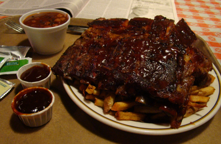

Slowly Getting There...

Move in
This will be the first blog entry from Mette’s and my new home here in Santa Barbara. Last weekend I looked at a place saturday. I was hoping we would be considered by the landlord but nothing was certain so all I could do was cross my fingers. However, due to my quick reply - by chance I saw the post on craigslist just 2 hours after it got posted and I replied right away - and us fitting the ‘tenants-profile’ they had in mind we got the place! Tuesday I met with the landlord’s son again and handed him the signed application. He told me right away that the landlord didn’t need the 3 days of consideration and we were exactly what they had been looking for. Wednesday I therefore bought us a new bed so I didn’t have to sleep on the floor when I moved in. I could of course also have bought an airbed, well actually my plan was to bring one from DK but it was simply to heavy so I prioritized clothes over airbed. So new bed it was. Thursday they delivered the bed so it was ready when I moved in yesterday. Having fixed all that and having signed up for gas and electricity, I spoiled (read: hurt) myself with some american BBQ friday night. I ordered pork ribs with fries and beans... damn it was good - and way too much... but it’s hard to stop eating when it’s good. And for that I ordered a Coke - including unlimited refill of course - it is the US. Even though the food was amazing (and cheap) I don’t think I have to eat there again for a while. I should watch out not to generalize too much, but it was kind of sad seeing so many families with kids dining there - of course it could be the one friday every 6 months the family goes there, however, unfortunately it looked like some of them came there (or similar places) quite often. That aside it was a lovely unhealthy, greasy and destroying feast. A good way to celebrate having found a new place.
So new bed it was. Thursday they delivered the bed so it was ready when I moved in yesterday. Having fixed all that and having signed up for gas and electricity, I spoiled (read: hurt) myself with some american BBQ friday night. I ordered pork ribs with fries and beans... damn it was good - and way too much... but it’s hard to stop eating when it’s good. And for that I ordered a Coke - including unlimited refill of course - it is the US. Even though the food was amazing (and cheap) I don’t think I have to eat there again for a while. I should watch out not to generalize too much, but it was kind of sad seeing so many families with kids dining there - of course it could be the one friday every 6 months the family goes there, however, unfortunately it looked like some of them came there (or similar places) quite often. That aside it was a lovely unhealthy, greasy and destroying feast. A good way to celebrate having found a new place.
Last time I promised some pictures... well it’s kind of sad to put up too many pictures as our place it pretty empty right now. It’s a small cottage not too far from State street (the main shopping/bar/theatre/dining-street in Santa Barbara) and fairly close to the beach. But I’ll give you this much: I was enjoying a cold beer on our new porch in the afternoon sun yesterday after having done a lot of shopping. And today I had my oat flakes with milk in the morning sun there as well. I already love this place ;) I’ll probably post some more pics when we get everything set up in a couple of months. But first we have to ship our stuff and then I think IKEA might need to give us a hand decorating. So until then you’ll have to imagine the rest of the cottage.
It’s a small cottage not too far from State street (the main shopping/bar/theatre/dining-street in Santa Barbara) and fairly close to the beach. But I’ll give you this much: I was enjoying a cold beer on our new porch in the afternoon sun yesterday after having done a lot of shopping. And today I had my oat flakes with milk in the morning sun there as well. I already love this place ;) I’ll probably post some more pics when we get everything set up in a couple of months. But first we have to ship our stuff and then I think IKEA might need to give us a hand decorating. So until then you’ll have to imagine the rest of the cottage.
This weekend my new boss came back from traveling so now I can also start working - great to have found place before! I got set up with laptop and keys to my office this week as well, but I still don’t have internet at UCSB. They are pretty paranoid with granting access to their network. They don’t even have a guest network (as far as I know) that I could log on to. And in order to apply for access you have to be online - not really the best way of doing it. And since I don’t have internet here (after having written the post I updated the blog from Starbucks) I hope to be able to log on to someone else's computer at UCSB tomorrow. The thing is that I have to be at UCSB to apply for access as I have to put in the name of the wall-socket I want to connect to and my ethernet hardware address in the online application. Not really the most clever way of doing it. And wifi... noo that is turned off as some physicist upstairs have an experiment they believe the wifi interferes with - come on! Well, either way; I just hope I’ll get hooked up tomorrow. I already have a ‘craving’ to be online; pretty pathetic - I know.
So the last week has been hectic. But now I’m at least in our new place so I can fully relax when I’m here, I have an office and I got my laptop... so I’m slowly getting there.
/K
Monday, 10 September 2012
